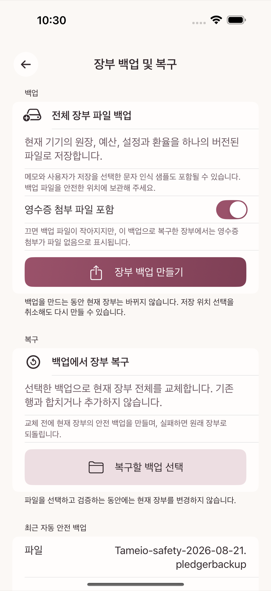
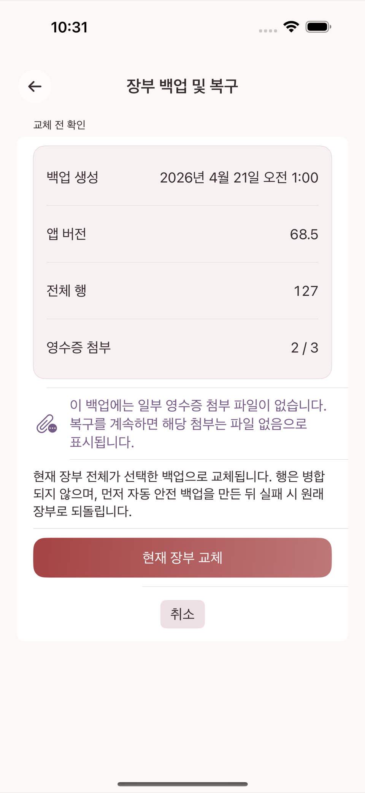
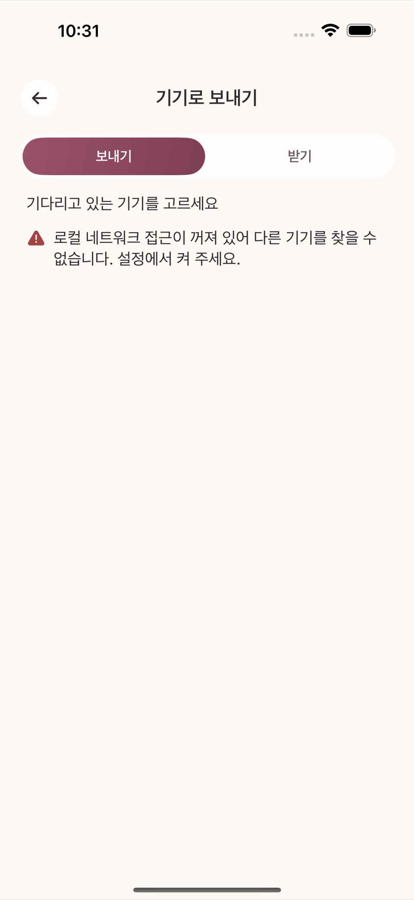
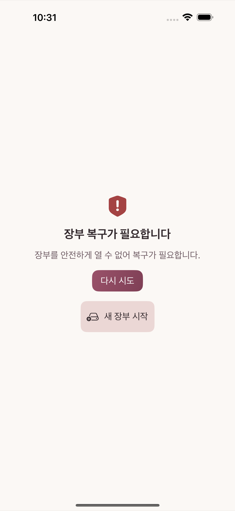

설정의 장부 백업 및 복구 화면에서 장부 백업 만들기를 누르면 지금까지의 모든 데이터를 하나의 백업 파일로 내보낸다. 이미 백업이 있다면 다시 백업 만들기로 최신 상태의 새 백업을 만든다. 백업 파일에는 거래·계정·예산·반복 규칙·문자 인식 규칙과, 사용자가 선택했다면 영수증 첨부까지 포함될 수 있다.

같은 화면의 백업에서 장부 복구를 눌러 백업 파일을 고르고 복구를 실행한다. 복원은 현재 장부를 백업 시점 상태로 되돌리는 작업이므로, 복원을 실행하기 전에 현재 상태의 안전 백업이 자동으로 하나 더 만들어진다 — 복원 결과가 마음에 들지 않으면 그 안전 백업으로 다시 되돌릴 수 있다.

새 기기로 옮기거나 두 기기의 장부를 맞출 때는 기기로 보내기를 사용한다. 전송은 암호화된 채널로 이뤄지며, 전송이 중간에 멈추거나 실패해도 이 기기의 데이터는 그대로 유지된다. 전송이 끝날 때까지 화면을 열어 둬야 한다.

이 항목은 설정 화면 안에서 평소에 누를 수 있는 버튼이 아니다. 장부를 정상적으로 열지 못했을 때만 나타나는 별도의 "복구 필요" 화면에서 "다시 시도"와 나란히 있는 두 번째 버튼이다. 여기서 "새 장부 시작"을 누르면 기존 장부는 그 자리에서 사라지는 것이 아니라 복구용 보관본으로 남고, 진행 전 확인 문구를 입력해야 하는 별도 확인 화면이 한 번 더 뜬다.

고장이 나서가 아니라 일부러 빈 장부로 다시 시작하고 싶다면, 위 경로를 기다릴 필요 없이 14장 위험 작업에서 설명하는 데이터 초기화(설정에서 바로 접근)를 사용한다 — 두 경로는 도달 화면도 도달 조건도 다르며, 어느 쪽이든 실행 전 반드시 필요한 백업을 먼저 만들어 둔다.